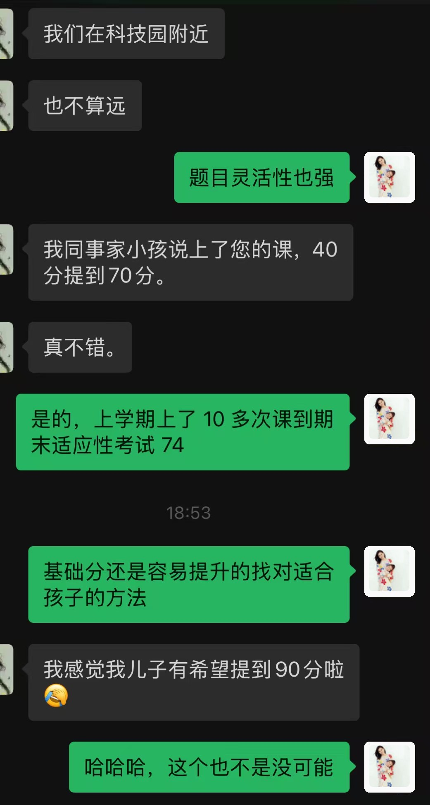
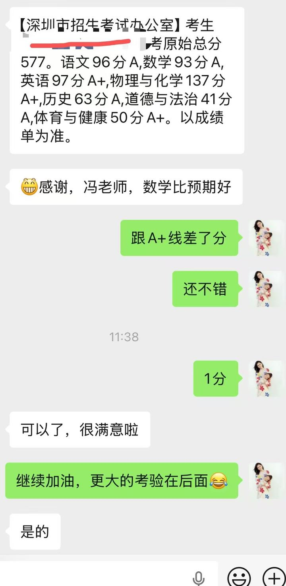
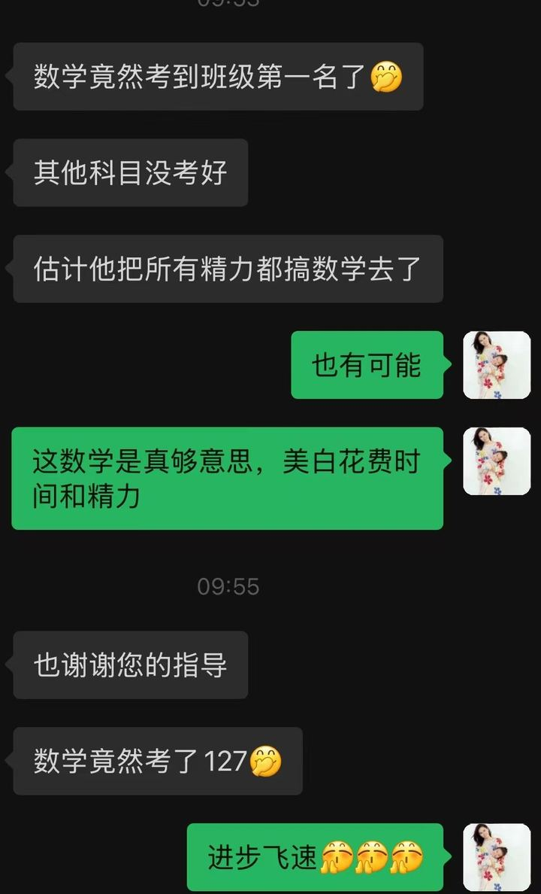
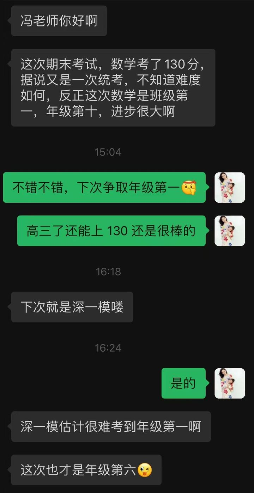

教学特点
- 熟悉深圳地区的中高考教材和各大名校，对中高考的重点难点把握精准。
- 熟悉各类学生特点，擅长初高数学培优补差。
- 带过 12 届初三毕业班、7 年高三，既懂中考节奏，也懂高考难度。
SHENZHEN · MATH · SINCE 2014
深圳 · 初高培优补差 · 中高考冲刺
原学而思数学老师
专注深圳中高考数学，熟悉本地教材与名校考点。擅长因材施教，从学生意愿与个体需要出发，让每个孩子找到属于自己的数学节奏。
所带中考生中，多人考入深圳“四大”“八大”名校，曾培养南海中学中考状元及深中“3+2”体系学生；所带高考生中，众多学生考入 985、211 等重点高校。
Teaching Philosophy
因材施教，不止于提分，
更关注学生思维与兴趣的成长。
持有 高中数学教师资格证
获 家庭教育指导师（高级） 认证
原学而思小组课教师、讲义编辑老师
How I Teach
六个维度，把“因材施教”落成可执行的动作。
熟悉深圳地区中高考教材，以及深圳中学、宝安中学、红岭中学等名校命题特点，重点难点把握精准。
根据学生不同阶段、不同性格与学习意愿，设计分层次教学方案，让每个孩子都有适合的节奏。
善于与学生沟通，营造民主和谐的学习氛围，让学生真正成为学习的主人。
不止讲解题目，更注重知识形成与探究过程中经验、方法的积累，引导学生多角度思考。
既擅长冲刺高分、冲刺四大八大，也擅长帮助基础薄弱学生重建信心、稳步提分。
从学生意愿出发，通过思路点拨与成就感建立，持续激发数学学习的内驱力。
Results
所带高中、初中学生在中高考与期中期末考中均有显著进步。
Parent Voices
真实的进步，来自家长与学生的共同认可。点击图片可放大。





Let’s Start
一次沟通，了解孩子的学习现状；一次试听，感受适合的教学节奏。